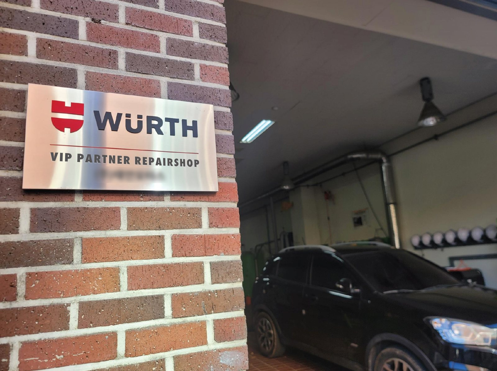
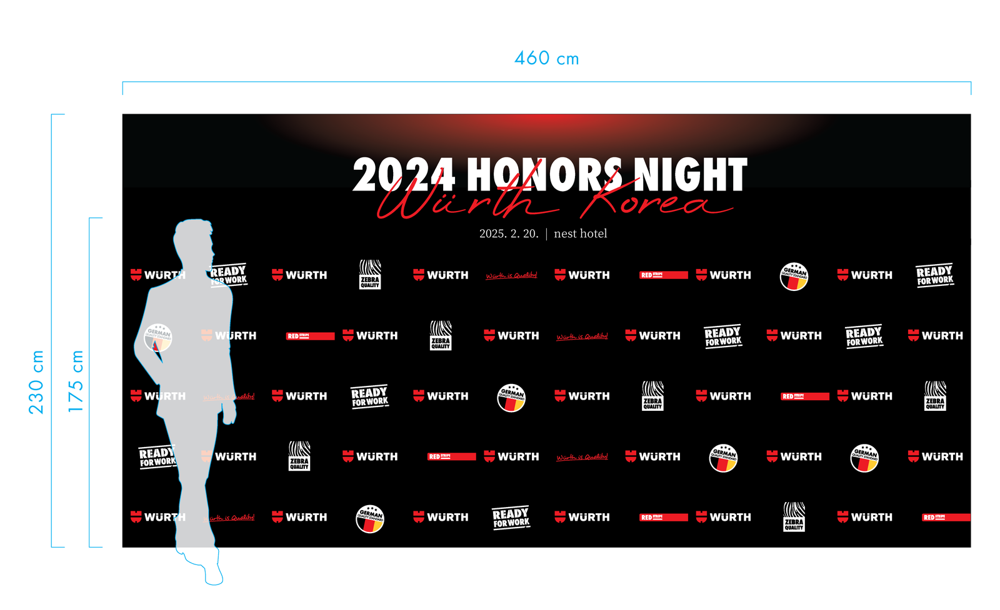
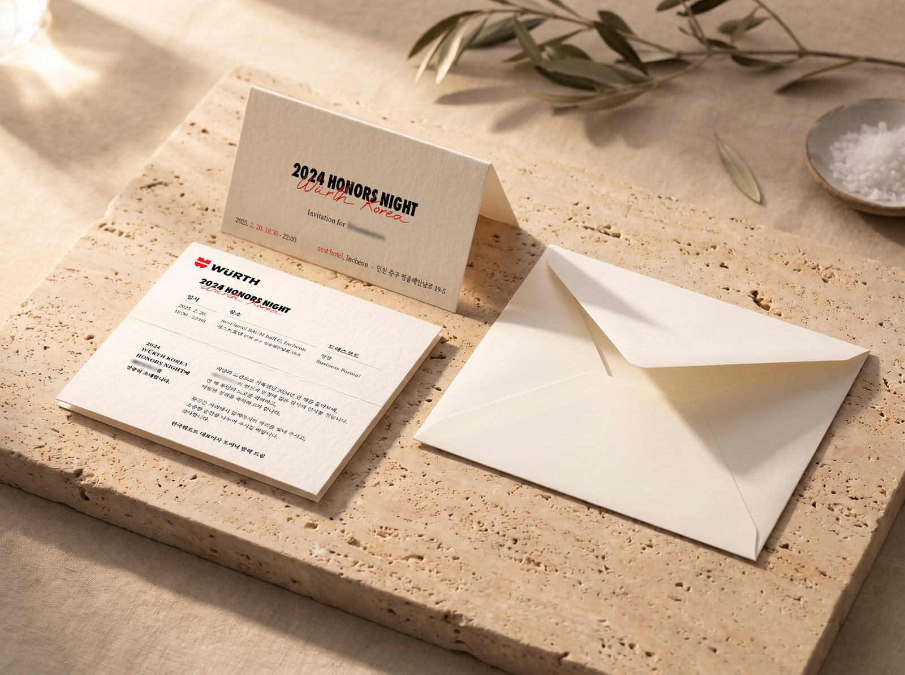

필요 없다던 고객이 VIP 플레이트를 달라고 했다
2025년 2월 인천 네스트호텔에서 열린 시상식 도중, 초청한 VIP 고객 한 곳이 자기들 몫의 메탈 플레이트도 만들어 달라고 했다. 정비소 네 곳과 함께 초청된 유통사 고객이었다. 행사 전에 플레이트 개요를 설명했을 때는 필요 없다고 했던 곳이다. 일반 정비 손님을 맞는 곳이 아니니 내보일 데가 없다는 이유였다.
그런데 다른 고객사 대표들이 실물을 받아 가는 모습을 보고 나서, 자기들 사무실에 걸어 두겠다며 하나를 청했다. 그래서 네 개만 준비했던 플레이트는 다섯 개가 됐다.
처음 해 보는 행사
이 행사는 2024년 한 해의 성과를 기리는 자리였다. 매출이 좋았던 영업사원과 내근 지원 직원을 시상하고, VIP 고객사 대표들도 초청했다. 장소는 인천의 5성급 디자이너 호텔인 네스트호텔이었고, 일정은 1박 2일이었다.
5성급 호텔에 고객사를 초청해 격식을 갖춘 행사를 연 건 설립 20년이 넘은 한국뷔르트에서도 처음이었고, 나에게도 처음이었다. 가이스트리히코리아에서 학회와 박람회 부스를 맡으며 연출을 부분적으로 해 본 적은 있다. 이번에는 그때 써 본 방법들을 한 행사에 모아서 썼다. 준비 기간은 1월부터 2월까지 두 달이었다.
다섯 명의 TF
행사는 다섯 명이 TF를 꾸려 준비했다. 인사팀장이 행사 전반을 기획했고, 인사팀원 한 명이 당일 쓸 기성품 소품을 샀다. 호텔과의 소통은 영업팀장 두 명이 맡았다. 나는 행사에 들어가는 시각물 전체를 기획하고 만들었다.
TF 다섯 명 모두 본업 위에 얹은 일이었다. 다만 실물을 만들어 내야 하는 시각물 쪽은 체감 부담이 더 컸다. 두 달 동안 평소 들어오는 제작 요청은 그대로 처리하면서 행사 제작물을 함께 만들었다.
만든 것을 꼽아 보면 종이 초대장과 모바일 초대장, 행사장 상단과 좌우에 거는 대형 장식물, 포토존, 우수 직원 상장, VIP 고객에게 줄 메탈 플레이트, 발표 슬라이드 템플릿이다. 포토월을 세울 트러스 부스를 빌리고, 스케치 영상과 스냅·기념사진을 찍을 촬영 담당자를 구하는 일도 내 몫이었다. 당일 행사장의 톤앤매너도 내가 정했고, 초대장부터 무대 장식물까지 같은 행사 타이틀을 넣었다.
벽에 거는 사이니지
플레이트는 당시 대표이사의 주문에서 시작했다. 주문은 고객이 벽에 붙일 수 있는 사이니지라는 것 하나였고, 크기와 재질, 도안과 문안은 내가 정했다.
크기는 가로 450mm, 세로 250mm로 잡고, 판은 스테인리스 헤어라인으로 했다. 뷔르트 로고는 입체로 따낸 스카시로 붙이고, 그 아래 문구와 상호는 음각 부식으로 새겼다. 한 판 안에서 가공을 두 가지로 나눠 높낮이에 리듬을 주려는 의도였다. 문구는 정비소에는 'VIP PARTNER REPAIRSHOP', 유통사에는 'VIP PARTNER'로 달리 넣었고, 수상 연도나 상 이름은 넣지 않았다.

사진에 남는 자리
포토월은 가로 460cm, 세로 230cm 트러스 부스로 세웠다. 도면에 키 175cm 사람의 실루엣을 세워 두고, 행사 제목이 그 머리 위에 오도록 배치했다. 사람이 서는 아래쪽에는 뷔르트 로고와 제품군 마크를 바둑판처럼 반복해 깔았다.

초대장과 감사 편지
종이 초대장은 가로세로 20cm로 접는 카드로 만들었다. 겉면에 받는 사람의 이름을 하나씩 넣었고, 안쪽 인사말에도 이름을 넣었다. 초대장에는 드레스코드를 '정장(Business Formal)'으로 적었고, 같은 내용으로 모바일 초대장도 따로 만들어 보냈다.

행사가 끝난 뒤에는 참석한 고객사 대표들에게 감사 편지를 보냈다. 당일 찍은 단체 사진을 넣고, 받는 사람의 이름을 하나씩 적었다.
남은 것
이듬해 행사는 규모가 크게 줄었다. 고객 초청 없이 호텔 연회장에서 직원들의 노고를 치하하는 작은 사내 행사로 바뀌었다. 고객을 호텔로 모신 시상식은 아직 이 한 번뿐이다.
포토월은 행사가 끝나고 철거했다. 회사 밖에 남은 건 플레이트다. 내가 아는 한 다섯 곳 모두 지금도 벽에 걸어 두고 있다.